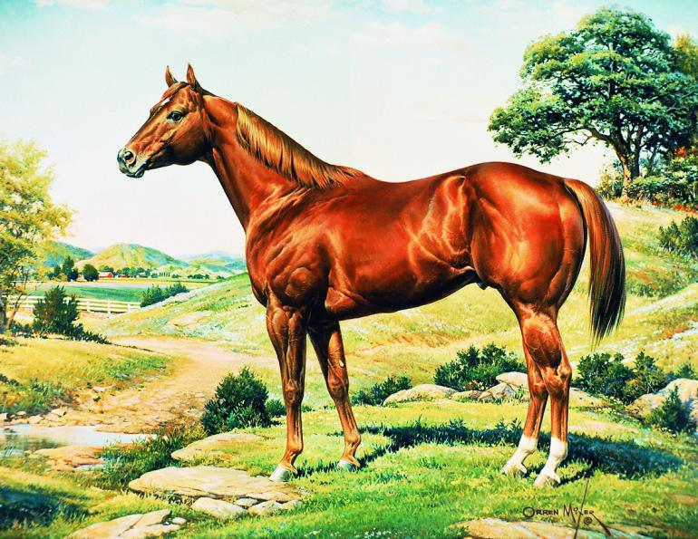
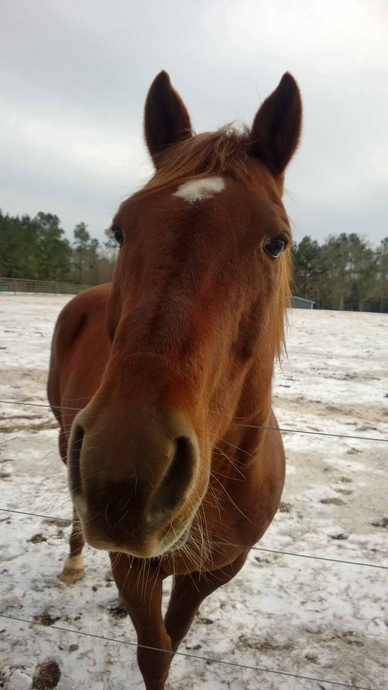

How The Breed Was Born
In the 17th century, colonists on the eastern seaboard of what today is the United States began to cross imported English Thoroughbred horses with assorted "native" horses such as the Chickasaw horse, which was a breed developed by Native American people from horses descended from Spain, developed from Iberian, Arabian and Barb stock brought to what is now the Southeastern United States by the Conquistadors.
One of the most famous of these early imports was Janus, a Thoroughbred who was the grandson of the Godolphin Arabian. He was foaled in 1746, and imported to colonial Virginia in 1756. The influence of Thoroughbreds like Janus contributed genes crucial to the development of the colonial "Quarter Horse". The breed is sometimes referred to as the "Famous American Quarter Running Horse". The resulting horse was small, hardy, and quick, and was used as a work horse during the week and a race horse on the weekends.
As flat racing became popular with the colonists, the Quarter Horse gained even more popularity as a sprinter over courses that, by necessity, were shorter than the classic racecourses of England, and were often no more than a straight stretch of road or flat piece of open land. When matched against a Thoroughbred, local sprinters often won. As the Thoroughbred breed became established in America, many colonial Quarter Horses were included in the original American stud books, starting a long association between the Thoroughbred breed and what would later become officially known as the "Quarter Horse", named after the 1⁄4 mile (0.40 km) race distance at which it excelled, with some individuals being clocked at up to 55 mph.
In the 19th century, pioneers heading West needed a hardy, willing horse. On the Great Plains, settlers encountered horses that descended from the Spanish stock Hernán Cortés and other Conquistadors had introduced into the viceroyalty of New Spain, which today includes the Southwestern United States and Mexico. These horses of the west included herds of feral animals known as Mustangs, as well as horses domesticated by Native Americans, including the Comanche, Shoshoni and Nez Perce tribes. As the colonial Quarter Horse was crossed with these western horses, the pioneers found that the new crossbred had innate "cow sense", a natural instinct for working with cattle, making it popular with cattlemen on ranches.
Early foundation sires of Quarter horse type included Steel Dust, foaled 1843; Shiloh (or Old Shiloh), foaled 1844; Old Cold Deck (1862); Lock's Rondo, one of many "Rondo" horses, foaled in 1880; Old Billy—again, one of many "Billy" horses—foaled circa 1880; Traveler, a stallion of unknown breeding, known to have been in Texas by 1889; and Peter McCue, foaled 1895, registered as a Thoroughbred but of disputed pedigree.
The main duty of the ranch horse in the American West was working cattle. Even after the invention of the automobile, horses were still irreplaceable for handling livestock on the range. Thus, major Texas cattle ranches, such as the King Ranch, the 6666 (Four Sixes) Ranch, and the Waggoner Ranch played a significant role in the development of the modern Quarter Horse. The skills needed by cowboys and their horses became the foundation of the rodeo, a contest which began with informal competition between cowboys and expanded to become a major competitive event throughout the west. To this day, the Quarter Horse dominates the sport both in speed events and in competition that emphasizes the handling of live cattle.
However, sprint races were also popular weekend entertainment and racing became a source of economic gain for breeders as well. As a result, more Thoroughbred blood was added back into the developing American Quarter Horse breed. The American Quarter Horse also benefitted from the addition of Arabian, Morgan, and even Standardbred bloodlines.
In 1940, the American Quarter Horse Association (AQHA) was formed by a group of horsemen and ranchers from the southwestern United States dedicated to preserving the pedigrees of their ranch horses.[16] The horse honored with the first registration number, P-1, was Wimpy, a descendant of the King Ranch foundation sire Old Sorrel. Other sires alive at the founding of the AQHA were given the earliest registration numbers Joe Reed P-3, Chief P-5, Oklahoma Star P-6, Cowboy P-12, and Waggoner's Rainy Day P-13. The Thoroughbred race horse Three Bars, alive in the early years of the AQHA, is recognized by the American Quarter Horse Hall of Fame as one of the significant foundation sires for the Quarter Horse breed. Other significant Thoroughbred sires seen in early AQHA pedigrees include Rocket Bar, Top Deck and Depth Charge.